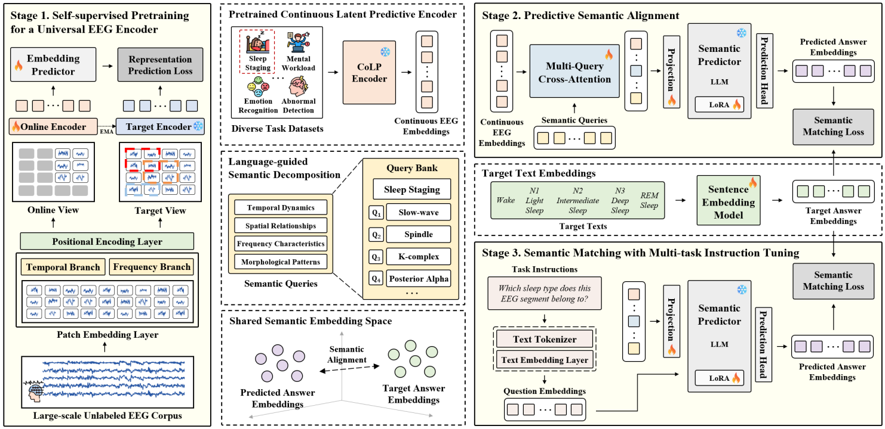
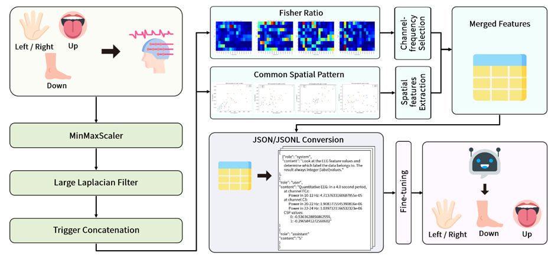

Multi-Scale Temporal Fusion Network with Encoding-Guided Reciprocal Re-ranking for ECoG-to-Text Semantic Decoding
IEEE BCI 2027 · Planned submission
Myeongju Cho
I am a master’s student in Brain and Cognitive Engineering at Korea University, working in the Pattern Recognition and Machine Learning (PRML) Lab, supervised by Prof. Seong-Whan Lee.
* Equal contribution · † Corresponding author
IEEE BCI 2027 · Planned submission

ARR 2027 · Preprint · Submitted

IEEE CW 2024
Poster · Oct. 2024 Classification of Non-Invasive EEG Signals During Motor Imagery Tasks Using a Large Language ModelInternational Conference on Cyberworlds (CW 2024) Kofu, Japan |
Poster · Nov. 2023 Decoding electroencephalographic signals for inner speech words in brain-computer interface using echo state networksSociety for Neuroscience (SfN 2023) Washington, DC, USA |
Conference presentation · Sep. 2023 Decoding electroencephalographic signals for inner speech words (functional, emotional) in brain-computer interface using Echo State Networks2023 KSEE Annual Conference Jeju, South Korea |
Research and applied work, from neural signals to language.
Learn neural representations that transfer across EEG tasks while retaining semantic information.
Explore self-supervised latent prediction for generalizable continuous EEG representations.
Investigate voice reconstruction from imagined and spoken speech EEG.
Turn financial news into sentiment signals and concise summaries.
Develop and evaluate an LLM-based approach to EEG motor imagery classification.
Classification of Non-Invasive EEG Signals During Motor Imagery Tasks Using a Large Language Model
IEEE International Conference on Cyberworlds (CW), 2024
View publications ↑Explore imagined speech BCI for alternative communication.
Nov. 2024 Teamwork AwardCapstone Design Competition Department of Computer and Artificial Intelligence Engineering, Pukyong National University |
Feb. 2024 Proud Student AwardCollege of Information Technology and Convergence, Pukyong National University |
Sep. 2023 Best Presentation Award2023 KSEE Annual Conference Korean Society for Engineering Education |
Korea UniversityM.S. in Brain and Cognitive Engineering | Sep. 2025 – Present |
Pukyong National UniversityB.S. in Computer Engineering | Mar. 2020 – Feb. 2025 |
Graduate Researcher · PRML LabKorea University · Prof. Seong-Whan Lee | Aug. 2025 – Present |
Undergraduate Researcher · Brain-inspired eXpainable Artificial Intelligence LabPukyong National University · Prof. Hoon-Hee Kim | Mar. 2023 – Jan. 2025 |